전자기기기능장 (2002-04-07 기출문제)
1과목: 임의구분
1. 다음 중 교류 전동기는?
- 유도 전동기
- 직권 전동기
- 분권 전동기
- 복권 전동기
(정답률: 88%)

2. 2단자 임피던스 함수 Z(S)가
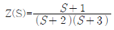
일 때 극점(zero)은?- -2, -3
- 2, 3
- +1
- -1
(정답률: 84%)
3. 어떤 회로의 피상전력이 20[kVA],유효전력이 16[kW]이다. 이 회로의 무효율은?
- 1.0
- 0.8
- 0.6
- 0.2
(정답률: 61%)
4. 진공 중에 Q1[C], Q2[C]의 전하(電荷)가 r[m]떨어져 있을 때 작용하는 힘 F[N]는?
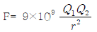
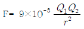
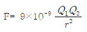
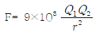
(정답률: 72%)
5. 플레밍의 왼손법칙에서 왼손가락의 모지, 인지,중지를 서로 직각되게 하였을 때 각 손가락의 방향은 무엇을 가리키는가?
- 모지(전류방향), 인지(자장방향), 중지(힘의방향)
- 모지(자장방향), 인지(힘의방향), 중지(전류방향)
- 모지(힘의방향), 인지(전류방향), 중지(자장방향)
- 모지(힘의방향), 인지(자장방향), 중지(전류방향)
(정답률: 86%)
6. fα=2[MHz]인 Tr를 이미터 접지로 사용한 경우 β차단 주파수 fβ는? (단, hfb=0.98)
- 10 [kHz]
- 20 [kHz]
- 30 [kHz]
- 40 [kHz]
(정답률: 60%)
7. Tr 증폭기에서 부하 저항이 클수록 전류 이득은?
- 변함없다.
- 감소한다.
- 증가한다.
- CB에서는 증가, CE나 CC에서는 감소한다.
(정답률: 75%)
8. 다음 회로는 FET의 고주파 등가회로이다. Ⓐ에 들어가는 것은?
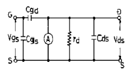
- μ Vgs
- gm Vds
- gm Vgs
- μ Vgd
(정답률: 63%)
9. Gunn Diode의 부성 저항 특성을 이용하기에 가장 적당한 것은?
- 마이크로파 검파기
- 마이크로파 혼합기
- 마이크로파 증폭기
- 마이크로파 발진기
(정답률: 69%)
10. 다음 중 A급 증폭기가 적당한 곳은?
- 반송파 발진기
- 주파수 체배기
- 고주파 증폭기
- 저주파 전력 증폭기
(정답률: 49%)
11. FM에서 최대주파수 편이 ΔF가 30[kHz] 최대 변조 주파수 Fm은 6[kHz]일 때 변조지수가 4라면 변조도 M은 몇 [%] 인가?
- 80
- 70
- 60
- 55
(정답률: 55%)
12. 아래의 펄스 발생 회로의 주파수는?
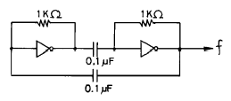
- 700[Hz]
- 350[Hz]
- 14[kHz]
- 7[kHz]
(정답률: 65%)
13. 어떤 상태 또는 명령을 2진 코드로 바꾸는 논리회로는?
- 멀티플렉서
- 디멀티플렉서
- 인코더
- 디코더
(정답률: 79%)
14. 반가산기에서 자리 올림 신호(Co)의 논리식은?
- A+B
- AㆍB
- A⊕AB
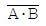
(정답률: 75%)
15. 착오 검출 및 교정용 코드로 잘 활용되는 것은?
- BCD 코드(8421 code)
- 3초과 코드(Excess-3 code)
- 그레이 코드(Gray-code)
- 해밍 코드(Hamming code)
(정답률: 80%)
16. 보기의 출력 Y가 I2가 될 S1, S2의 조건은?
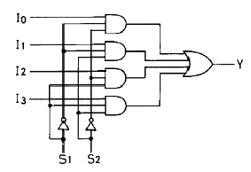
- S1=0, S2=0
- S1=0, S2=1
- S1=1, S2=0
- S1=1, S2=1
(정답률: 73%)
17. JK 플립플롭에서 J=1, K=1 일 때 클럭 펄스가 들어가면 출력 Q는?
- 0
- 1
- Q
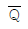
(정답률: 77%)
18. 아래의 논리회로와 등가인 논리회로는?
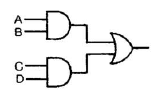
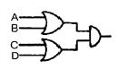
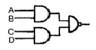
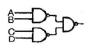
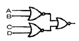
(정답률: 61%)
19. 임의의 주파수 대역에서 균일한 스펙트럼을 가진 연속성인 잡음은?
- 인공잡음
- 자연잡음
- 여파잡음
- 백색잡음
(정답률: 76%)
20. AM 튜너에서 중간주파 특성 소자로써 사용되지 않는 것은?
- 크리스털 필터
- 세라믹 필터
- IFT
- 발진 코일
(정답률: 61%)
2과목: 임의구분
21. AM/FM 스테레오 튜너의 특성을 나타내지 않는 용어는?
- 선택도
- 분리도
- 명료도
- 감도
(정답률: 46%)
22. TV 수상기의 주사선수가 625라인 방식에서 매초 송상수가 25인 경우 수평주사의 주기는?
- 0.02 [μs]
- 9.375 [μs]
- 62.5 [μs]
- 64 [μs]
(정답률: 46%)
23. Color TV의 VIF 특성 곡선을 조정하기 위한 장비 중 가장 관계가 없는 것은?
- SWEMAR Generator
- Oscilloscope
- Patterm Generator
- Attenerator
(정답률: 61%)
24. COLOR TV 수상기에서 수상관의 입력까지 직류분을 전송하는 이유는?
- 휘도 변화에 의한 Raster의 진폭 변화방지
- ACC 효과를 좋게 하기 위하여
- 3.58MHz 발진을 정확히 하기 위하여
- 정확한 색을 충실히 재현하기 위하여
(정답률: 64%)
25. Color TV의 Remocon에서 기능 제어용으로 가장 많이 사용되는 Signal은?
- AM 주파수
- FM 주파수
- 적외선
- 자외선
(정답률: 76%)
26. 이상적인 증폭기에서의 잡음지수는?
- F = 0
- F = 1
- F = 0.1
- F = ∞
(정답률: 53%)
27. 스피커에서 가장 능률이 좋은 것은?
- 혼형(horn type)
- 리본형(ribbon type)
- 콘형(cone type)
- 콘덴서형(condenser type)
(정답률: 59%)
28. R-C 결합 증폭기에서 중역 주파수 대역이득 Avm=120이었을 때 저역 차단점에서의 전압이득 AVL은 약 얼마인가?
- 120
- 100
- 85
- 60
(정답률: 50%)
29. 콘(Cone)형 스피커의 저음 특성을 향상시키기 위한 설명 중 가장 적합한 것은?
- 임피던스가 커야 한다.
- 진동계의 스티프니스(stiffness)를 작게 하고, 진동판의 실효 중량을 크게 한다.
- 진동판의 두께를 증가시키고, 보이스 코일을 굵게 한다.
- 구경을 작게 하고, 콘에 코루게이션(corrugation)을 많이 넣는다.
(정답률: 79%)
30. 오디오 앰프의 성능을 좌우하는 요소가 아닌 것은?
- SN비
- 고조파 찌그러짐
- 주파수 특성
- 감도
(정답률: 59%)
31. 디지털 시스템에서 음수를 나타내는 방법이 아닌 것은?
- 부호와 절대값
- 1의 보수표시
- 2의 보수표시
- 9의 보수표시
(정답률: 70%)
32. 유도 가열에서 300[kW]의 전력으로 어떤 금속을 가열하는데 필요한 주파수는 10[kHz]이다. 이 금속의 가열 종류는?
- 대형금속의 표면강화
- 소형금속의 금속용해
- 소형금속의 표면강화
- 대형금속의 금속용해
(정답률: 70%)
33. 회전 운동계의 토크 및 관성 모멘트는 전자계의 무엇으로 대응 되는가?
- 전압 및 인덕턴스
- 저항 및 콘덴서
- 전압 및 전류
- 저항 및 인덕턴스
(정답률: 79%)
34. 다음과 같은 OP 앰프 반전 증폭기에서 저항 R2를 사용하는 이유는?
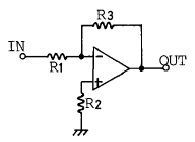
- 주파수 특성을 보상하기 위해서
- 바이어스 전류의 영향을 줄이기 위해서
- 오프셋 전압을 조절하기 위해서
- 차동증폭도를 크게 하기 위해서
(정답률: 56%)
35. JFET에서 IDSS=4[mA], Vp=-2.5[V], VGS=-0.5[V]인 경우 Ib[mA]는 약 얼마인가?
- 1.5
- 2.6
- 5
- 7
(정답률: 60%)
36. 인가전압에 따라 용량이 변화하는 성질을 갖는 반도체는?
- 쇼트키 다이오드
- 포토 다이오드
- 터널 다이오드
- 바랙터 다이오드
(정답률: 79%)
37. 연산증폭기의 성능을 평가하는 주요항목으로 차동이득과 동상이득의 비를 나타내는 것은?
- 오프셋 전압(offset voltage)
- 슬루 율(slew rate)
- 전원전압 제거비(PSRR)
- 동상신호 제거비(CMRR)
(정답률: 78%)
38. 서브루틴(subroutine) 호출시 복귀 주소를 저장하는 곳은?
- ROM
- pointer
- stack
- program counter
(정답률: 69%)
39. 마이크로프로세서와 메모리 혹은 인터페이스 장치간의 정보를 교환하는 통로로서 양쪽 방향 모두 정보전달이 가능한 것은?
- 어드레스 버스
- 데이터 버스
- I/O버스
- 모뎀
(정답률: 69%)
40. 자기 테이프(Magnetic Tape)에서 BPI 단위의 의미는?
- 기록밀도
- 전송속도
- 파일의 크기
- 레코드의 간격
(정답률: 82%)
3과목: 임의구분
41. PCM(펄스부호변조)과 관계가 없는 것은?
- 동조화
- 표본화
- 양자화
- 부호화
(정답률: 75%)
42. 두개의 다른 물질의 접합부에서 전류가 흐르면 그 전류의 방향에 따라 열이 발산되거나 흡수하는 현상은?
- 지벡(Seebeck) 효과
- 톰슨(Thomson) 효과
- 압전 효과
- 펠티어(Peltier) 효과
(정답률: 66%)
43. 초음파 탐상기의 중요 측정 범위가 아닌 것은?
- 금속의 비중
- 물체의 두께 측정
- 물체 내부의 흠
- 물체 내부의 균열
(정답률: 73%)
44. 고출력의 연속망을 얻을 수 있고, 주로 전기 방전에 의하여 펌핑이 행해지는 LASER는?
- 고체
- 액체
- 기체
- 반도체
(정답률: 68%)
45. 바다물 속에서 초음파의 속도는 15[℃]에서 1527[m/sec]이다. 초음파를 방사하여 0.2[sec] 후에 반사파를 얻었다. 바다물 속의 깊이는 약 몇 [m]인가?
- 17
- 57
- 153
- 563
(정답률: 76%)
46. 피측정 주파수를 계수형 주파수계로 측정하였더니 1분 동안에 반복횟수가 96,000회였다. 피측정 주파수는 몇 [kHz]인가?
- 0.4
- 0.8
- 1.6
- 3.2
(정답률: 68%)
47. 유전체손의 응용에 해당되지 않는 것은?
- 목재의 건조
- 고무의 가황
- 종이나 섬유류의 건조
- 금속의 균열 발견
(정답률: 80%)
48. 레이저의 특징이 아닌 것은?
- 레이저는 마이크로파 증폭에 사용된다.
- 레지저 빔은 고 강도의 단색광이다.
- 레이저는 좁은 선폭을 갖고 집속되어 있다.
- 레이저 빔은 철물의 절단, 의학계 등에 사용된다.
(정답률: 72%)
49. 자동제어에서 제어량의 종류가 아닌 것은?
- 압력
- 속도
- 시간
- 주파수
(정답률: 66%)
50. 역율이 0.001인 콘덴서 Q의 값은?
- 100
- 1000
- 1
- 10
(정답률: 69%)
51. 중앙처리장치의 정보를 기억장치에 기억(Memory)시키는 것을 무엇이라고 하는가?
- Fetch
- Store
- Load
- Read
(정답률: 82%)
52. PM 방식의 원리 설명으로 FM 변조기 앞에 어떤 회로를 삽입하면 PM파를 얻을 수 있는가?
- 적분회로
- 미분회로
- 위상 변조기
- 평형 변조기
(정답률: 75%)
53. 전송하고자 하는 신호를 연속된 신호로 전송하는 것이 아니라 일정한 시간 간격으로 순간순간 신호의 진폭을 표본화하여 전송하는 방식은?
- FM 통신방식
- AM 통신방식
- 펄스 통신방식
- 다중 통신방식
(정답률: 77%)
54. 저항 4[Ω], 유도 리액턴스 3[Ω]이 직렬일 때 5[A]의 전류가 흐른다면 이 회로에 가한 전압은?
- 15 [V]
- 20 [V]
- 25 [V]
- 35 [V]
(정답률: 67%)
55. 도수분포표에서 도수가 최대인 곳의 대표치를 말하는 것은?
- 중위수
- 비 대칭도
- 모우드(mode)
- 첨도
(정답률: 77%)
56. 일정통제를 할 때 1일당 그 작업을 단축하는데 소요되는 비용의 증가를 의미하는 것은?
- 비용구배(Cost slope)
- 정상 소요시간(Normal duration)
- 비용견적(Cost estimation)
- 총비용(Total cost)
(정답률: 78%)
57. 서블릭(therblig)기호는 어떤 분석에 주로 이용되는가?
- 연합작업분석
- 공정분석
- 동작분석
- 작업분석
(정답률: 42%)
58. 관리도에서 점이 관리한계 내에 있고 중심선 한쪽에 연속해서 나타나는 점을 무엇이라 하는가?
- 경향
- 주기
- 런
- 산포
(정답률: 60%)
59. 모집단의 참값과 측정 데이터의 차를 무엇이라 하는가?
- 오차
- 신뢰성
- 정밀도
- 정확도
(정답률: 59%)
60. 준비작업시간이 5분, 정미작업시간이 20분, lot수5, 주작업에 대한 여유율이 0.2라면 가공시간은?
- 150분
- 145분
- 125분
- 1⑤분
(정답률: 66%)